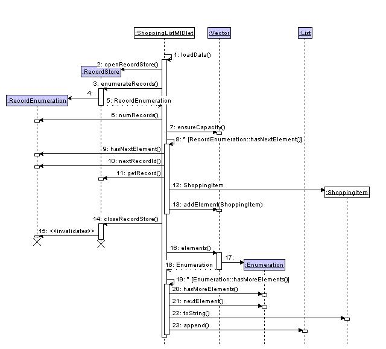

The RMS API provides the method for saving and restoring data to and from the filing system. RMS uses a database API to store/restore data. This example uses one record for each type of item.
The following list and class diagram identify the classes used in this example.
Application classes
ShoppingListMIDletShows a List screen, displaying the items in the shopping list; also handles loading and saving the data.ShoppingItemEncapsulates an item on the list.EditItemScreenUI to edit the details of a ShoppingItem.
System classes
RecordStoreA collection of records which persist across multiple invocations of the MIDlet.RecordEnumerationIterates over the records in the RecordStore.DataInputStreamReads primitive Java™ data types from an underlying input stream.ByteArrayInputStreamProvides an input stream accessing a byte array.DataOutputStreamWrites primitive Java data types to an underlying output stream.ByteArrayOutputStreamProvides an output stream in which the data is written to a byte array.ListA Screen containing a list of choices.VectorImplements a growable array of objects.

The engine of the midlet is a collection of ShoppingItems. Each instance of ShoppingItem is a line on a shopping list - it contains the name of the item, and the quantity needed. This collection is stored in a Vector.
The RMS database is a mirror of the Vector, containing one record for each ShoppingItem. In loadData() each database record is used to construct a separate ShoppingItem.
In saveData() the database is synchronised with the Vector using the following rules:
- If a shopping item has been deleted, the corresponding record is deleted.
- If a shopping item has been modified, the corresponding record is modified.
- If a shopping item has been created, a new record is created.
- Any other record is not accessed.
When a new record is added to the database a record id is allocated to it. Record ids are allocated sequentially, beginning at 1, and are never reused unless the database is deleted. Each ShoppingItem stores the id of the record in the database that corresponds to it.
Because no record has id 0, this id can be (and is) used to identify ShoppingItems that are not yet represented in the database.
The issues involved when multiple applications require concurrent access to the database have not been addressed in this example.
4.1. Loading
The following two diagrams show the sequence of actions when the database records are loaded, which occurs when the application starts. The first diagram shows ShoppingListMIDlet's sequence of actions, treating the ShoppingItem class as a black box.

Message Description 1 ShoppingListMIDlet's startApp method calls loadData.2 loadData calls RecordStore.openRecordStore(String,boolean false)to create a new RecordStore object accessing the existing record store.3 - 5 loadData calls RecordStore.enumerateRecords(RecordFilter,RecordComparator,boolean), to retrieve an enumeration of the records available.6 - 7 loadData calls Vector.ensureCapacity(int)to prepare storage for the number of records in the store. This step is not necessary, but will improve performance on large record stores.8 - 13 loadData iterates over the enumeration. 9 loadData checks that unread records exist, by calling RecordEnumeration.hasNextElement().10 - 11 loadData calls RecordEnumeration.nextRecordId()andRecordStore.getRecord(int)to retrieve both a record id and the corresponding record data.12 loadData constructs a new ShoppingItem, using the retrieved record id and record data. The implementation of ShoppingItem's constructor is discussed in the next sequence diagram and commentry.13 the new ShoppingItem is stored in the Vector. 14 - 15 The RecordStore is closed. This makes the RecordEnumeration invalid. 16 - 23 The user interface is initialised. A List screen is created, and for each ShoppingItem in the Vector, a string representing the item is added to the List. Note that the numbering of items in the List matches that in the Vector; when the user requests to edit an item, the details of the item can be retrieved by Vector.elementAt(List.getSelectedIndex()). The entire sequence is contained in a try-catch block for RecordStoreExceptions. These are only expected to occur if the record store does not exist, in which case the application's normal flow of execution will start with a blank list, and create the store in saveData(). This will occur the first time the example is run, as the database does not exist.
A RecordStoreException occurring after the first record has been loaded would suggest a corrupt database, or something else accessing the file at the same time. This circumstance has not been considered in this example, which will start with all the records it has loaded. Ideally the user should be warned.
An inner try-catch block for IOExceptions is used for ShoppingItem's constructor. This is discussed after the next sequence diagram.
This sequence diagram illustrates the constructor of ShoppingItem. It expands step 12 of the previous diagram.
Message Description 1 loadData constructs a new ShoppingItem, using the retrieved record id and record data.2 The record data is used to open a ByteArrayInputStream. 3 A DataInputStream is opened on the ByteArrayInputStream. 4 - 5 The name of this item is read with the function DataInputStream.readUTF().6 - 7 The quantity is read with the function DataInputStream.readInt().8 - 9 The input streams are closed.
4.1.1. IOException handling in loadData()
There are two practical ways to handle corrupt database records. This example deletes corrupt records, but salvages all readable records in the database. This requires nested try-catch blocks, one for accessing the database itself (discussed above), and a second for the IO streams used in ShoppingItem's constructor. An IOException occurring there suggests that a single record in the database is corrupt. The application continues to load as many items as possible, and marks the corrupt ones for deletion in saveData().
Consider the scenario if only the outer block was used, and that multiple records in the database throw IOExceptions when the application attempts to read them. On reading the first corrupt record, the application stops reading records. It only knows about one record that is corrupt, and only this record is marked for deletion. Any record currently unread will be left unmodified in the database (but not visible to the user) until the next time the application is started. Each time the application is restarted, some records would reappear, and other records might disappear.
An alternative strategy that could be used is for the application to warn the user that the database is corrupt, and give them the choice of quitting or completely deleting the database. Using this option, the IOException could be caught from the same try- block as the RecordStoreException.
4.2. Saving
The following three diagrams show the sequence of actions that take place when the database records are saved, which occurs when the application exits. The first diagram shows ShoppingListMIDlet updating the RMS by deleting any records with record ids listed in the Vector deletedRecords.
The second diagram shows ShoppingListMIDlet saving the contents of the Vector shoppingItems, treating the class ShoppingItem as a black box.

Message Description 1 ShoppingListMIDlet's exit sequence calls saveData.2 saveData calls RecordStore.openRecordStore(String,boolean)to create a new RecordStore object, creating the underlying store if it does not exist.3 - 5 saveData calls deletedRecords.elements(), to retrieve an enumeration of Integers containing the record ids of deleted ShoppingItems.6 - 11 saveData iterates over the enumeration. 7 saveData checks the loop conditional, by calling Enumeration.hasMoreElements().8 - 10 saveData calls Enumeration.nextElement()to retrieve the Integer, andInteger.intValue()to convert this to a primitive int.11 saveData calls RecordStore.deleteRecord(int), on the record id retrieved in step 10.12 - 14 saveData calls shoppingItems.elements(), to retrieve an enumeration of ShoppingItems.15 - 22 saveData iterates over the enumeration. 16 saveData checks the loop conditional, by calling Enumeration.hasMoreElements().17 - 18 saveData calls Enumeration.nextElement()to retrieve the ShoppingItem19 - 20 saveData checks if this record is modified. If it is not, processing moves on to the next item in the enumeration. 21 - 22 The ShoppingItem is converted to a byte array. This is discussed in the next sequence diagram and commentry. The record id for this ShoppingItem is also retrieved. 23 saveData calls RecordStore.setRecord(int,byte[],int,int), using the record id and data retrieved in the previous two steps. If the record id isShoppingItem.NOT_IN_DATABASE,RecordStore.addRecord(byte[],int,int)is called instead.24 The RecordStore is closed. The sequence to step 23 is contained in a try-catch block for RecordStoreFullExceptions. A real device may have a limit on the amount of data stored in the RMS as low as 8k, after which this exception would be thrown. A non-demo application should probably catch this condition, warn the user and try to let them choose what will be lost. Some applications will by their design and purpose have a set limit on the amount of data that can be stored, and could assume that this could never happen.
This example performs minimal recovery in this condition, by closing the record store. Already written records will be preserved, and all others will be lost. This exception is expected if the "Generate 1000 items" action is used on a device with an 8k limit.
The same block has a catch for general Exceptions. These are not expected in this method, and error recovery has been implemented minimally in this example, by separating step 24 (closing the record store) in to a separate finally block.
This sequence diagram illustrates the implementation of ShoppingItem.toByteArray. It expands step 21 of the previous diagram.
Message Description 1 saveData calls ShoppingItem.toByteArray().2 A new ByteArrayOutputStream is constructed. 3 A DataOutputStream is opened on the ByteArrayOutputStream. 4 The name of this item is written with the function DataOutputStream.writeUTF(String).5 The DataOutputStream may write the score to the ByteArrayOutputStream immediately, or it may defer writing until step 9. 6 - 7 The quantity is written with the function DataOutputStream.writeInt(int), and may be written to the ByteArrayOutputStream.8 - 9 The DataOutputStream is flushed. When this step completes, the score and high score will have been written to the ByteArrayOutputStream. 10 - 11 The record data is retrieved from the ByteArrayOutputStream as a byte array. 12 - 13 The output streams are closed.
4.3. Alternative implementations
When designing an application, the method of data storage can be very important. After the "Generate 1000 items" action is performed, this example stores one record for each of the 1000 objects that it creates. The developer may compare this method of data storage with alternative schemes on the target device.
This example loads all of the database records in to memory, and only accesses the RMS at launch and exit. To reduce the memory footprint at the expense of more calls to the RMS, the Vector could be omitted. In this scenario the List is populated directly from the database, and each time an item is edited it is loaded from the RMS, and stored immediately after editing.
This could be continued to only load the short description of the currently showing records.
For this example, the items are very small, and the description in the List contains all of the non-implementation data in ShoppingItem.
Instead of keeping the list of deleted items in a separate Vector, saveData() could iterate over a RecordEnumeration and check that the corresponding ShoppingItem is present in the shoppingItems Vector. The time to do this is proportional to (number of records in RMS) x (number of items in shoppingItems), and is not feasible for large numbers of items.
Another trade off between memory and database IO is in the use of the
ShoppingItem.modifiedfield. As can be seen when the Generate menu option is used, saving all records in a large database is a lot slower than saving only the modified ones.